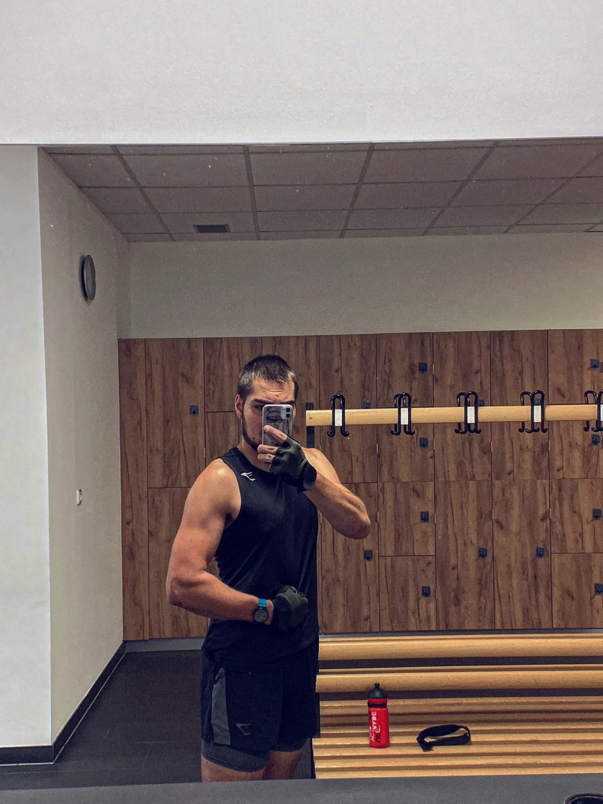
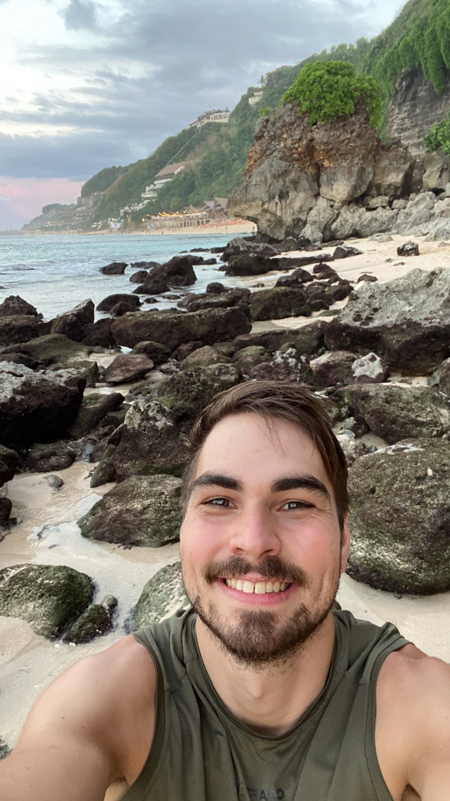
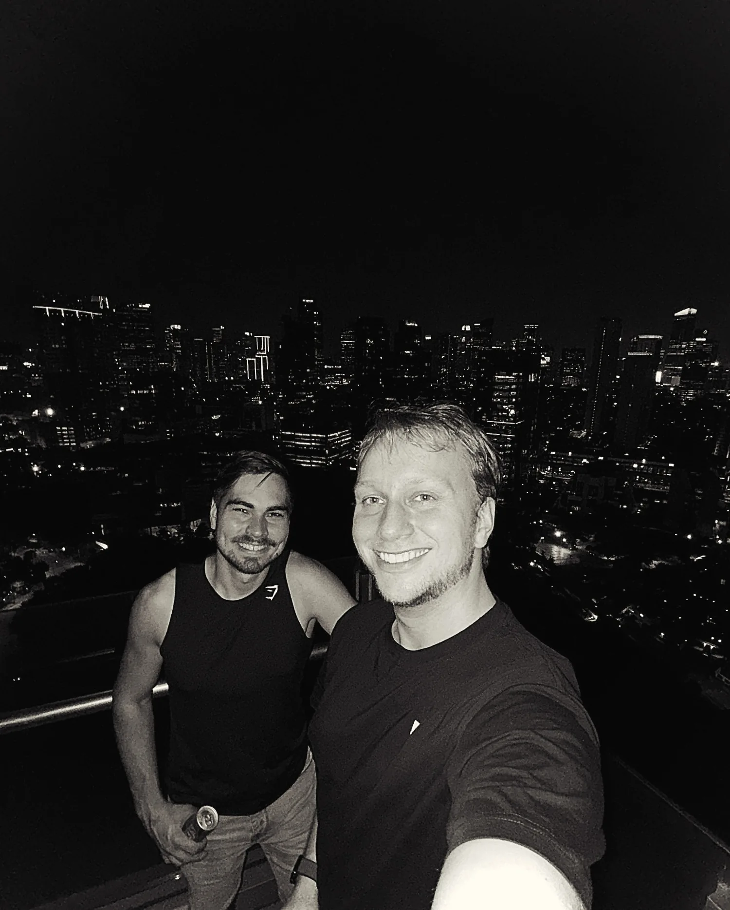

Gym
Training. Fortschritt. Balance.
02 / 02 · REAL LIFE
Nicht nur ein Job. Auch Bewegung, neue Orte und unvergessliche Momente gehören zu mir.

Training. Fortschritt. Balance.

Neue Orte. Neue Perspektiven.

Gute Musik. Gute Menschen.
ÜBER MICH
Ich bin Nick – kreativ, neugierig und offen für neue Ideen. Hier zeige ich, woran ich arbeite und was mich antreibt.